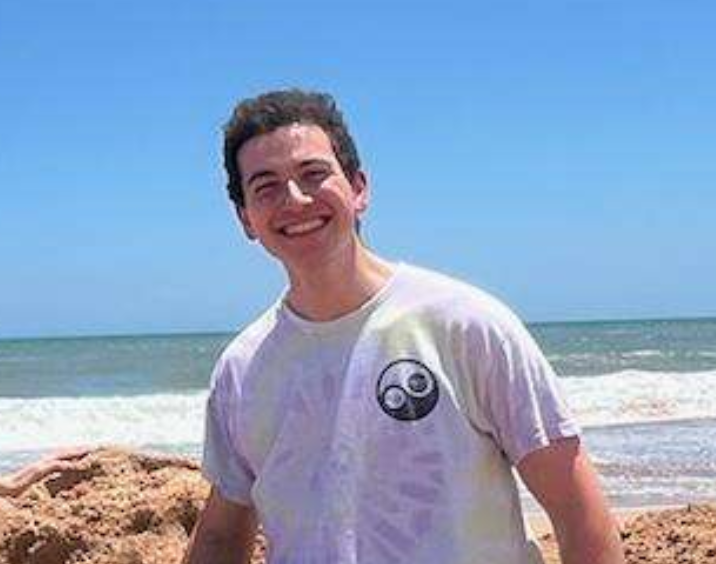

Mechanical Design
Chassis architecture, drivetrain layout, reverse engineering, CAD modeling, drafting, fabrication, and hardware documentation.
Welcome
I'm a Mechanical Engineering Graduate student at Carnegie Mellon University with a passsion for Spaceflight, Robotics, and Motorsport.

Professional and Personal Background
I am a Mechanical Engineering Graduate student at Carnegie Mellon University with a background in rocket propulsion, robotics, additive manufacturing, FEA and CFD simulation, coding, and technical documentation.
My work is driven by a practical engineering goal: turn open-ended technical problems into systems that can be designed, tested, explained, and improved. I have contributed to projects involving a NASA Lunabotics rover, Mars transit vehicle propulsion analysis, experimental heat exchanger research, legacy 3D printer restoration, Formula SAE, and in-atmosphere launch vehicle development.
Across these projects, I use CAD models, data, presentations, documentation, and visual evidence to clarify design decisions for teammates, reviewers, and future users.
Skills, Experience, and Project Range
My projects move across competition robotics, aerospace design, experimental research, and repair-focused manufacturing. The common thread is turning open-ended technical problems into documented, testable work.
Chassis architecture, drivetrain layout, reverse engineering, CAD modeling, drafting, fabrication, and hardware documentation.
C++, Python, MATLAB, LabVIEW, optimization workflows, control libraries, system trade studies, and risk-prioritization tools.
Wind tunnel testing, drawbar pull test development, LabVIEW acquisition, RTDs, thermocouples, flow meters, load cells, and performance interpretation.
Design reviews, PDR reports, repair documentation, visual explanations, concise project narratives, and team coordination.
Selected Work


NASA Lunabotics Challenge
The Lunabotics Challenge advances excavation systems that could support future lunar infrastructure. My sub-team's objective was to design a robust drivetrain and chassis that could operate in a simulated lunar environment while meeting competition constraints.
As drivetrain and chassis sub-team lead, I guided a swerve-drive style mobility architecture and maintained an integrated digital twin CAD model. The model gave mechanical, electrical, and software contributors a common reference for design reviews, packaging decisions, and integration issues.
The design improved modularity, serviceability, and control precision compared with earlier concepts. It also strengthened my ability to coordinate across sub-teams, pair CAD decisions with C++ control requirements, and communicate trade-offs under budget constraints before fabrication.


ARES Mars Transit Vehicle
Human missions to Mars require propulsion systems that transfer times shorter than a traditional Hohmann transfer without sacrificing efficiency or reliability. This project's objective was to evaluate high-power electric propulsion configurations for a conceptual Mars transit vehicle.
On the electrical propulsion team, I contributed to a Python and MATLAB optimization framework that compared efficiency, power demand, and mission-duration trade-offs across multiple architectures and operating conditions.
The team consolidated findings into a Preliminary Design Review and used an FMEA of the electrical bus and propulsion subsystems to identify high-risk components. The work built my experience in quantitative trade studies, risk communication, and defending technical choices to reviewers.

Embry-Riddle Gas Turbine Labratory
Improving turbofan efficiency can reduce fuel consumption and environmental impact in aviation. This research project investigated an experimental heat exchanger designed to manage oil temperature across different flight conditions.
I supported fabrication, assembly, wind tunnel testing, and data collection. The experimental setup used RTDs, thermocouples, flow meters, and load cells, with LabVIEW coordinating synchronized thermal and flow measurements.
The data helped the team evaluate heat transfer behavior and identify future design improvements. Maintaining the shared CAD model also gave the team a reliable communication artifact that linked test hardware, design changes, and research findings.

Replicator Revival Project
Many MakerBot Replicator 2X printers remain in schools and labs but are difficult to use because of aging hardware, deprecated software, and limited support. The project objective is to keep these machines useful and reduce electronic waste.
The project centers on a reverse-engineered CAD model, archived software resources, repair documentation, validated replacement parts, and pathways toward modern firmware ecosystems such as Klipper and Marlin.
The result is a practical technical resource that helps users diagnose failure modes, reproduce repairs, and plan upgrades with widely available tools. It demonstrates my interest in sustainable engineering, documentation quality, and accessible repair knowledge.
Resume
Carnegie Mellon University
M.S. Mechanical Engineering - Advanced Study, expected May 2027.
Embry-Riddle Aeronautical University
B.S. Aerospace Engineering - Rocket Propulsion, May 2025.